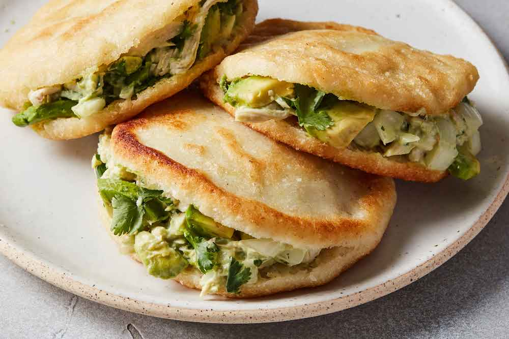

Arepas

Arepas are round, flat cornmeal cakes originally from **Venezuela and Colombia**, made from **precooked corn flour (masa arepa)** mixed with water and salt. They're cooked on a griddle or baked, and can be **split and filled** with ingredients like cheese, meats, beans, or avocado. Crispy on the outside and soft inside, arepas are enjoyed at any meal and are incredibly versatile.
Ingredients
- 2 cups precooked white or yellow cornmeal (e.g., P.A.N.)
- 2 cups warm water
- 1 tsp salt
- 1 tbsp oil or butter (for extra softness)
- cheese, shredded meat, beans, avocado
Steps
- Mix dough: In a bowl, combine 2 cups precooked cornmeal and 1 tsp salt. Slowly add 2½ cups warm water, stirring until a soft dough forms. Let rest 5 minutes.
- Shape: Divide dough into equal balls, then flatten into discs about ½ inch thick.
- Cook: Heat a lightly oiled skillet or griddle over medium heat. Cook arepas for about 5–7 minutes per side until golden and a crust forms.
- Optional: Finish in a preheated oven at 350°F (175°C) for 10 minutes for a crispy crust.
- Serve: Slice open and fill with cheese, meats, or your favorite toppings.
Home